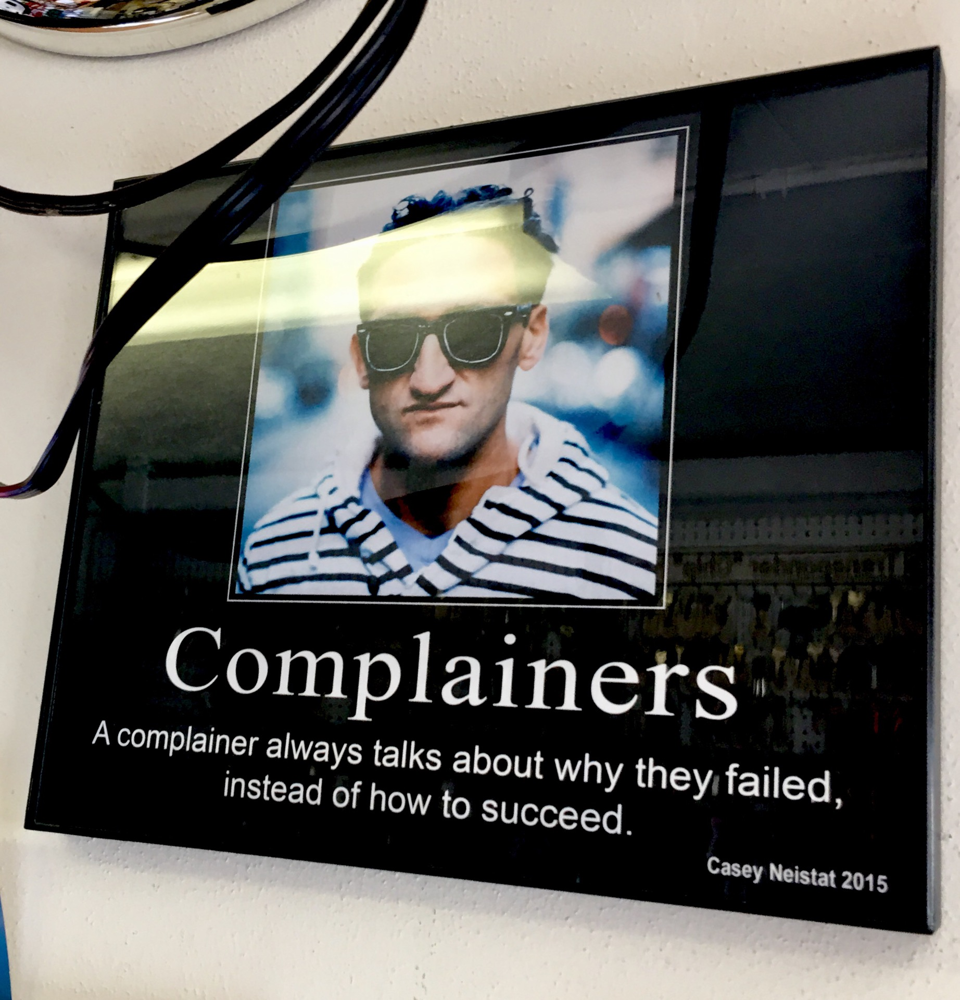

Mindset & Wellness
Have A Bitter-Sweet Day

I have a request. Read through this post with a grain of salt, but see if it doesn't move your brain into a different wavelength, and let me know what you think.
I see the wide majority of people scrolling through life trying to find reasons for doing well through their cellphone screen rather than just doing the basic tasks (which everyone knows about) that are required to do well: love your mom, love your dad, work hard, pay your bills, be a good friend, take care of your health... THE BASICS. That last one really urks me. The one where you eat the fruits, eat the vegetables, drink the water, do the workouts. You know? THE BASICS. If you have a difficult time with this area, read on.
Every other ad and commercial on television or the internet has the next best option to get your body into a better-capable condition. Capable to walk a mile, capable to do a push-up, capable to do a pull-up, capable to get up the stairs. There is simply no limit to the amount of information people have at their fingertips to help them get into great shape. Yet, the wide majority of people don't seem to be able to do these simple, fundamental tasks on a consistent basis in order to live a life that is more centered with their values. My question is, WHY? And I have great news. I have found the answer.
Too much of our attention is focused on the tragedies that happen in our world. There are too many tragedies that come to mind when I let the thought enter my brain because of the media on the internet, but I'm a certified fitness trainer, and quite honestly I don't even know what the percentages of the obesity rates are anymore because I have lost interest. I also have a bachelor's degree in Kinesiology, and what I learned in school was how focused we are on how unhealthy our world is. I'm not focused on that information. I'd like to focus your attention to the positive side of this issue. I'd like to focus your attention to how easy making healthy decisions can be.
First of all, working out is like a drug. It's one of the best kinds! It literally releases what I like to call the happy chemical, called dopamine, into your brain. Dopamine has been said to have an effect on the brain that literally makes you happier. How neat is that! However, the only way to get this little happy buzz into your life is to take massive action.
It's going to be a bittersweet day however you look at it, so let's face it, I'm not perfect and neither are you. Not everything will always go as planned for you. So why not have a cookie a day? A scoop of ice cream a day? One day out of the week where you allow yourself some pizza. Something to let you know that your metabolism is running. Right? You've heard it, everything in moderation. So here is my second answer to my previous question. WHY NOT take the first step to living a healthier lifestyle so you can grow old and be able to say you have carried the weight of your soul on your two feet until the very last day? Just take a look in the mirror and say to yourself how brilliant it will be once you feel like you've created a mountain of a body and a physique in which you can stand tall with your chin up and your feet stable on the ground.
The first step is the conscious decision to make an effort. The rest will unfold for you once you take the necessary steps to reach your goal. So go out and get a gym membership (or even a job at a gym!). Hit the weights. Get a personal trainer. Ride a bicycle. Hike to the top of the mountain so you can watch the beautiful sunset. Whatever it is just find your avenue of exercise, and let it guide you towards a healthier and happier you. You will not regret it. It's one of the best feelings in the world.